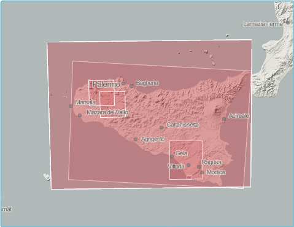
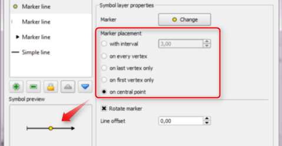
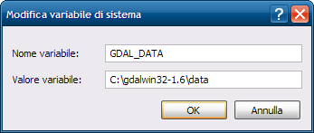

Archivio per la categoria ‘osgeo’
26 giugno, 2011 | di Andrea Borruso
In un dopocena di un po’ di tempo fa, speso in letture web su python e gdal, ho “guardato” un po’ dentro l’archivio di Google code, ed in particolare tra i progetti etichettati con “gdal”. Sono soltanto 17 e tra questi l’occhio mi è “caduto” su MetaGETA: Metadata Gathering, Extraction and Transformation Application.
Si tratta di un’applicazione scritta in python, per estrarre e raccogliere metadati da dataset raster spaziali, in uno di questi formati:
- Generic format (che legge tutti i formati “classici” di GDAL, incluso GDAL Virtual Raster)
- EO1 ALI (L1G & L1R) e Hyperion (L1R)
- ACRES ALOS AVNIR-2/PRISM/PALSAR
- ASTER
- ACRES Landsat CCRS/SPOT 1-4
- Digital Globe
- ECW
- ECWP
- ENVI
- ESRI Bil
- ESRI GRIDs
- ACRES Landsat FastL7A
- JPEG2000
- Landsat geotiff
- NetCDF
- NITF
- SPOT 1-4
- SPOT DIMAP
La scelta è molto ampia, con formati “generici” ed altri “specializzati” tipici del mondo del remote sensing. L’architettura a plugin dell’applicazione consente comunque di aggiungere facilmente nuovi driver di lettura di metadati.
E’ uno strumento di grande utilità, perché l’estrazione di metadati strutturati consente di conoscere meglio le proprie basi dati e di dargli quindi più valore.
Si tratta di un software opensource multipiattaforma, installabile da codice sorgente e nel caso di Windows anche tramite un installer. Io ho testato soltanto quest’ultima versione.
Il lancio si esegue (anche) da riga di comando con questa sintassi tipo:
>runcrawler.bat/sh arguments
Se non vengono forniti argomenti sufficienti, si aprirà la finestra di dialogo sottostante, in cui è possibile scegliere il percorso da analizzare, quello del file di output del processo, ed altre opzioni (tra cui quella di cercare anche nelle sottocartelle).

Gli output sono:
- un file .xls con i metadati raccolti
- la generazione (opzionale) di un’immagine di anteprima e di un thumbnail per ogni immagine dell’archivio
- un quadro d’unione in formato ESRI Shapefile in coordinate geografiche (ma EPSG:4283, perché gli sviluppatori sono australiani, e gli piacciono i codici EPSG del paese loro), con in il bounding box di ogni immagine associato ai relativi metadati
Se volete un’idea dei contenuti del file .xls di output, potete fare click qui: le coordinate del bounding box, la risoluzione, il sistema di coordinate, il datatype, il tipo di compressione, le dimensioni, il numero di bande, ecc.. Ma ci sono anche campi tipici (come detto sopra) del remote sensing.
Ho invece pubblicato su GeoCommons uno shapefile di output di esempio. E’ il classico layer poligonale costituito dai bounding box degli strati informativi processati – analogo a quello di output di gdaltindex – arricchito dai metadati “intercettati” da MetaGETA.

Aggiunti nuovi file nel proprio archivio (e dopo un”eventuale rimozione di vecchi), possono essere eseguite nuove operazioni di indicizzazione che aggiorneranno i record del file .xls . Questo può essere facilmente convertito in XML secondo lo schema ANZLIC Profile (ISO 19139) e caricato ad esempio su GeoNetwork. E’ ancora una volta possibile personalizzare il processo, modificare lo schema di esportazione ed aggiungere anche nuovi campi.
MetaGETA però non fa miracoli e potrà estrarre soltanto i metadati associati ai vostri dati; in presenza di una “povera” coppia tif/tfw, non sarà in grado di determinarne il sistema di coordinate. Io l’ho trovato molto utile anche per questo: mi ha fatto scoprire diverse “falle” di alcune mie basi dati, ed evidenziato ancora una volta il grande valore del corredo informativo dei dati spaziali. Buon crawling!
Posted in osgeo, Strumenti | No Comments »
19 giugno, 2011 | di Andrea Borruso
Tim Sutton ha da poco annunciato che è stato rilasciato ufficialmente QGIS 1.7.0 – Wroclaw e le novità sono veramente tante.
Alcune sono legate all’infrastruttura del progetto:
Queste invece alcune delle novità software:
- Simbologia
- il nuovo gestore della simbologia – già presente nella versione precedente – è diventato quello di default
- import ed export degli stili
- elementi lineari
- è possibile inserire un simbolo nel punto centrale di una linea
- è possibile inserire un simbolo sul primo e sull’ultimo nodo di una linea
- è possibile inserire un simbolo in ogni vertice di unalinea
- elementi poligonali
- rotazione dei riempimenti svg
- aggiunta la possibilità di inserire un simbolo in corrispondenza del centroide di un poligono
- etichette
- è possibile impostare la distanza in unità di mappa
- inserito uno strumento per muovere/ruotare/cambiare interattivamente le etichette
- Nuovi strumenti
- aggiunta un’interfaccia per gdaldem
- aggiunte nuove funzioni nel field calculator, $x $y e$perimeter
- aggiunto lo strumento “Lines to polygons” nel menu Vector
- aggiunto lo strumento “Voronoi polygon” nel menu Vector
- Interfaccia
- zoom ad un gruppo di layer
- “Suggerimento del giorno” all’avvio (si può disabilitare)
- migliore organizzazione dei menu, e nuovo menu database
- possibilità di mostrare in legenda il numero di feature per ogni classe (si attiva con il tasto destro del mouse)
- migliorata usabilità e “pulizia”
- Gestione CRS
- visualizzazione del CRS attivo nella barra di stato
- possibilità di assegnare il CRS dal menu contestuale in legenda
- possibilità di impostare il CRS di default per i nuovi progetti
- Raster
- aggiunti gli operatore AND e OR nel raster calculator
- riproiezione al volo
- inserita un barra degli strumenti, con pulsanti per calcolo dell’istogramma e funzioni di stretch
- Gestione e provider dati
- supporto per Join tra tabelle
- nuovo provider vettoriale SQLAnywhere
- supporto per la ricerca di valori NULL nella tabella degli attributi
- miglioramenti nella modifica e nella gestione degli attributi
- possibilità (opzionale) di inserire gli attributi della feature precedente all’inserimento di una nuova
- stringa di rappresentazione dei Null value configurabile
- possibilità di unire/assegnare valori di campi ad un insieme di feature
- possibilità di salvare (tramite OGR) oggetti geometrici senza attributi associati (i.e. DGN/DXF)
- QGIS Server
- possibilità di specificare le Capabilities WMS nella finestra Proprietà Progetto
- supporto per stampa WMS tramite GetPrint-Request
- Plugin
- supporto per l’utilizzo di icone nella finestra di dialogo di gestione dei plugin
- rimosso plugin “quickprint” (usare in sostituzione il plugin easyprint scaricabile dal catalogo)
- rimosso plugin “ogr convertor” (usare in sostituzione “save as” dal menu contestuale)
- Stampa
- supporto per Undo/Redo nel gestore di stampa
Io l’ho appena installato ed il primo impatto è molto buono. Feature come il supporto per il Join, la riproiezione al volo dei file raster e le migliorie legate alla simbologia mettono da subito di buon umore. Nel ringraziare tutti quelli che hanno contributo al progetto, ricordo (anche a me stesso) che QGIS è basato sul volontariato; una donazione, anche minima, si può fare da qui.
- Supporto Join

- Simbologia elementi lineari

- Conteggio feature

- Gestione CRS

___
Posted in News, osgeo | 8 Comments »
9 gennaio, 2011 | di Andrea Borruso
Python (http://python.org) è un linguaggio di programmazione di alto livello, adatto ai più svariati obiettivi di programmazione. Viene usato per applicazioni web e desktop, giochi, programmazione scientifica, utility e anche per porzioni di sistemi operativi.
Anche chi ha la necessità di sviluppare delle applicazioni in grado di leggere, scrivere, analizzare ed elaborare dati ed informazioni spaziali, troverà in Python un compagno di viaggio piacevole, eclettico e ricco di pregi. Chi lavora in questo contesto e segue il mondo della programmazione, sa che si tratta di un linguaggio che sta diventando tra i più diffusi, sia nel mondo proprietario che in quello open-source, con a disposizione numerose librerie ad hoc.
Anche per questo, penso sia arrivato il momento (anzi mi sento in grande ritardo) di scrivere un post che fornisca gli strumenti per iniziare a “sporcarsi le mani”.
In linea teorica è possibile scrivere da zero codice Python che consenta di manipolare dati spaziali. Per fortuna esiste – tra le tante librerie disponibili – il binding Python di GDAL/OGR; per iniziare è molto più comodo appoggiarsi sulle spalle di questo gigante.
Due annotazioni prima di passare agli aspetti pratici:
- questo post consentirà di configurare Python e GDAL/OGR in ambiente Windows. Confido in qualche collega della redazione per scrivere le istruzioni utili per altri sistemi operativi
- verrà descritta una delle tante modalità possibili per configurare l’ambiente
Procedura
Installare GDAL per Python su Windows è un processo semplice, che può essere portato fino in fondo, seguendo la seguente procedura:
- Scaricare l’installer di Python dal sito ufficiale – http://www.python.org/download/ – ed installarlo. E’ possibile scaricare diverse release; noi abbiamo effettuato i nostri test con gli installer della 2.6.x
- Installare GDAL/OGR per Windows
- Scaricarlo da http://download.osgeo.org/gdal/win32/. Abbiamo utilizzato il file “gdalwin32exe160.zip” che si trova nella cartella “1.6”.
- Decomprimere questo file in una cartella del vostro PC. L’abbiamo estratta in C:\ ed abbiamo quindi creato la cartella C:\gdalwin32-1.6.
- Aggiungere la cartella di GDAL che contiene gli eseguibili (“C:\gdalwin32-1.6\bin” nel nostro caso) alla variabile di ambiente “Path”.
- Aprire il “Pannello di controllo” di Windows
- Fare click su Sistema (se usate la visualizzazione per categorie, “Prestazioni e manutenzione” e poi “Sistema”).
- Fare click su Avanzate
- Fare click su “Variabili d’ambiente”.
- Cercare la voce “Path” tra le “Variabili di sistema” e cliccare su Modifica.
- Fare click sulla cella “Valore variabile”, andare in fondo alla riga, aggiungere un “;” ed inserire il percorso completo della cartella “bin” della vostra installazione di GDAL (C:\gdalwin32-1.6\bin nel nostro caso).
- Fare Click su OK.

- Aggiungere “GDAL_DATA” come nuova variabile d’ambiente.
- Fare click su “Nuovo” nella finestra “Variabili d’ambiente”.
- Inserire “GDAL_DATA” nel campo “Nome variabile”.
- Inserire il percorso completo della cartella data di GDAL nel campo “Valore variabile” (nel nostro caso “C:\gdalwin32-1.6\data”).
- Fare click su “OK”. Aggiungeremo più avanti altre variabili d’ambiente, quindi potete tenere aperta questa finestra di dialogo.

- Installare PROJ.4 per Windows. E’ un pacchetto necessario per potere gestire le proiezioni ed i sistemi di coordinate.
- Scaricare PROJ.4 da http://download.osgeo.org/proj/. Il file binario per Windows – proj446_win32_bin.zip – non è aggiornatissimo, ma non è un problema.
- Decomprimere questo file in una cartella del vostro PC, ad esempio in “C:\proj”.
- Aggiungere la cartella “bin” di PROJ.4 (“C:\proj\bin” nel nostro caso) alla variabile di ambiente “Path”. Per farlo dovete seguire gli stessi passi visti sopra per la cartella “bin” di GDAL, ed aggiungere stavolta “C:\proj\bin”.
- Aggiungere “PROJ_LIB” come nuova variabile d’ambiente. Dovete seguire le stesse istruzioni usate per la variabile “GDAL_DATA”, ma il nome della variabile è stavolta “PROJ_LIB”, ed il valore è il percorso completo della cartella “nad” contenuta in PROJ.4 (C:\proj\nad nel nostro caso).
- Copiare il file “proj.dll” dalla cartella “bin” di PROJ.4 alla cartella bin di GDAL. Nel nostro caso da “C:\proj\bin\” a “C:\gdalwin32-1.6\bin\”.
- Installare il binding per Python di GDAL
- Scaricare la versione appropriata alla vostra release di Python da http://pypi.python.org/simple/GDAL/. Il file più aggiornato, compatibile con la versione 2.6.X di Python, è “GDAL-1.6.1.win32-py2.6.exe”.
- Fare doppio click sul file, e completare la procedura di installazione
- Riavviare il sistema.
Al riavvio avrete a disposizione un sistema in cui sarà possibile scrivere codice SPAZIALE (nel senso di bel codice  ).
).
Ciao mondo
Il codice sottostante lo potrete usare come test “Ciao Mondo”, e verificare la procedura seguita.
# importazione dei moduli
import sys
try:
from osgeo import ogr
except:
import ogr
# apertura di uno shapefile in lettura
driver = ogr.GetDriverByName('ESRI Shapefile')
fn = 'C:/nomefile.shp'
dataSource = driver.Open(fn, 0)
# verifica dell'esistenza del file
if dataSource is None:
print 'Il file ' + fn + ' non esiste'
sys.exit(1)
# accesso al layer
layer = dataSource.GetLayer()
# conteggio delle feature
numFeatures = layer.GetFeatureCount()
print 'Numero di feature: ' + str(numFeatures)
# estensione del layer
extent = layer.GetExtent()
print 'Estensione:', extent
print 'Coordinate vertice in alto a sinistra:', extent[0], extent[3]
print 'Coordinate vertice in basso a destra:', extent[1], extent[2]
L’output sarà qualcosa di simile a quanto riportato sotto:
Numero di feature: 33
Estensione: (280151.67957063887, 294843.14350770513, 4210159.3865045626, 4220843.5284850718)
Coordinate vertice in alto a sinistra: 280151.679571 4220843.52849
Coordinate vertice in basso a destra: 294843.143508 4210159.3865
Buone letture
La procedura descritta in questo post è quasi una traduzione dell’eccellente documento scritto da Chris Garrard: “Installing GDAL manually”. Il dott. Garrard cura un corso denominato “Geoprocessing with Python using Open Source GIS“, di cui trovate online il materiale didattico (slide, esercizi e codice); è stato per me illuminante per fare i primi passi e consiglio a tutti i novizi di leggerlo: ASSOLUTAMENTE DA NON PERDERE (si, sto urlando).
Per chi non ha mai scritto codice Python, e non ne ha alcuna conoscenza, la pietra miliare è (per me) “Pensare da informatico“.
Buoni propositi
Il desiderio mio (e credo dei colleghi della redazione) è quello di non lasciare questo post da solo. Nel 2011 vorrei mettergli accanto dei fratellini; non saranno magari dei ricchi tutorial, ma la coppia GIS & Python sarà uno dei temi che terremo sotto osservazione e di cui daremo nota nel blog e/o soltanto nei canali Twitter e Facebook.
Buona scrittura 
In questi giorni il tema generale dell’installazione delle librerie
GDAL su
Windows è
caldissimo. Sono in preparazione
nuovi installer, e probabilmente nei prossimi mesi aggiorneremo questo post con una procedura più semplice e diretta.
Posted in Didattica, osgeo | 2 Comments »
29 ottobre, 2010 | di Antonio Falciano
Il processo di liberazione dei dati pubblici procede abbastanza lentamente in Italia, nonostante le prime lodevoli iniziative in tal senso (dati.piemonte.it, CKAN Italiano, Linked Open Camera), mentre in altri Paesi (USA e UK in primis) si tratta di un fenomeno già ampiamente consolidato, tanto da rivoluzionare radicalmente il tradizionale modo di intendere il rapporto tra cittadini e Pubblica Amministrazione. Si veda, ad esempio, il portale Challenge.gov, dove i vari dipartimenti esecutivi ed agenzie federali americani lanciano delle vere e proprie sfide ai cittadini sulle questioni più disparate, che vanno dall’ambiente alla sanità, dall’economia alla tecnologia, a fronte della risoluzione delle quali sono previsti premi di natura economica.
Challenge.gov is a place where the public and government can solve problems together.
Il clamoroso ritardo del Belpaese in materia di Open Data è imputabile a diversi fattori. Da un lato, persiste di fatto l’assenza di una forte e concreta volontà politica di innescare tale processo in tempi brevi. Dall’altro, tuttavia, si comincia a registrare una graduale presa di coscienza del notevole impatto positivo che la liberazione dei dati prodotti dalla PA è potenzialmente in grado di produrre in termini di trasparenza dell’azione amministrativa e, al tempo stesso, come valida opportunità di sviluppo economico nei vari settori dell’IT. Ampio merito va dato alla Regione Piemonte, che con il suo portale dati.piemonte.it, rappresenta finora l’unica PA italiana che, pur non essendo obbligata a farlo (come argomenta Gerlando Gibilaro in un suo recente post su InDiritto), ha predisposto un banco di prova utile per mostrare effettivamente cosa si può fare con i dati grezzi e qual è il loro potenziale intrinseco ancora tutto da esplorare. A tal proposito, recentemente il portale si è arricchito di un’ulteriore sezione dedicata ai casi d’uso dei dati finora rilasciati, ancora piuttosto limitati in numero, ma non per molto visto che i tempi sono più che maturi…
Infatti, dopo essere rimasti a guardare a lungo cosa accadeva oltremanica o oltreoceano, è giunto finalmente il momento di tradurre questa opportunità in azione! Pertanto, al di là delle etichette, civic hacker, hacktivisti o civil servant di tutta Italia mettiamoci anche noi in gioco, “sporchiamoci” le mani con gli open data e affrontiamo la nostra sfida per l’innovazione e lo sviluppo. Ne va di mezzo anche la reputazione del nostro estro creativo che, da sempre, ci invidia tutto il mondo!
Gli open data piemontesi sul turismo…
All’esordio di dati.piemonte.it, i primi dataset resi disponibili non erano caratterizzati da forte connotazione geografica. Oggi, invece, grazie al recente rilascio dei dati relativi al settore del turismo, è possibile cominciare a ragionare in termini di localizzazione di attività produttive, nella fattispecie di strutture ricettive, e di rappresentazione all’interno di un’applicazione di web mapping, utilizzando un approccio maggiormente legato al territorio rispetto a quello prettamente illustrativo adottato in questo post. Nel dettaglio, sto riferendomi ai dati “Anagrafica esercizi – ricettività”, contenenti l’elenco delle quasi 5000 strutture ricettive piemontesi censite nel 2009, per ognuna delle quali è fornito l’indirizzo (via e comune), alcuni recapiti, la tipologia, l’eventuale qualifica (numero di stelle) e alcuni indicatori di capacità ricettiva (numero di camere, letti e bagni).

Data cleansing e faceted navigation…
Scaricati i dati di interesse, questi si presentano come un file di estensione .7z comprendente, a sua volta, due file .csv, di cui uno contenente i dati veri e propri e l’altro dei metadati. Fin qui tutto ok! Aprendo entrambi i file, tuttavia è possibile notare delle strane sequenze di caratteri (es. +AC0-, +AC1-, +Aog-, …): esse rappresentano la codifica di alcuni caratteri speciali (es. lettere accentate) derivanti dalla conversione dei dati grezzi nel formato CSV a partire dalla sorgente di dati originaria… Emerge chiaramente la necessità di dover ripulire questi dati e, piuttosto che utilizzare un comune editor di testo o un foglio di calcolo, ne ho approfittato per testare Google Refine (ex Freebase Gridworks), software con cui avevo visto fare cose davvero strabilianti in queste screencast.
 Si tratta, infatti, di un potente strumento per ripulire i dati grezzi (data cleansing), in grado di renderli consistenti, collegarli a basi di dati esterne come Freebase, aggregarli con dati provenienti da altre fonti, convertirli nei formati necessari da utilizzare in altri strumenti e contribuire ad alimentare, a loro volta, altre fonti di dati. Ma non è finita qui…
Si tratta, infatti, di un potente strumento per ripulire i dati grezzi (data cleansing), in grado di renderli consistenti, collegarli a basi di dati esterne come Freebase, aggregarli con dati provenienti da altre fonti, convertirli nei formati necessari da utilizzare in altri strumenti e contribuire ad alimentare, a loro volta, altre fonti di dati. Ma non è finita qui…  Pur essendo utilizzato all’interno di un browser, Google Refine non è un servizio web, ma un’applicazione desktop eseguibile sul proprio computer che consente ampia libertà nel flusso di lavoro, prevede un meccanismo di “undo/redo” persistente (anche in caso di crash della macchina!) e supporta diverse modalità avanzate di ricerca e di filtraggio dei dati mediante facet (faccette). In particolare, la “faceted navigation“ (“navigazione guidata” o “ricerca a faccette“) è quel metodo di ricerca incrementale per parole chiavi, molto utilizzato ad es. nei portali di e-commerce, che guida l’utente in tempo reale verso le informazioni ricercate attraverso una serie di piccoli e semplici passaggi, garantendogli ampia libertà di scelta.
Pur essendo utilizzato all’interno di un browser, Google Refine non è un servizio web, ma un’applicazione desktop eseguibile sul proprio computer che consente ampia libertà nel flusso di lavoro, prevede un meccanismo di “undo/redo” persistente (anche in caso di crash della macchina!) e supporta diverse modalità avanzate di ricerca e di filtraggio dei dati mediante facet (faccette). In particolare, la “faceted navigation“ (“navigazione guidata” o “ricerca a faccette“) è quel metodo di ricerca incrementale per parole chiavi, molto utilizzato ad es. nei portali di e-commerce, che guida l’utente in tempo reale verso le informazioni ricercate attraverso una serie di piccoli e semplici passaggi, garantendogli ampia libertà di scelta.
I dati sono stati quindi ripuliti dai vari refusi presenti, effettuando operazioni di sostituzione in maniera batch (in caso di errore, come accennavo prima, esiste fortunatamente la possibilità di annullare le modifiche) e controllando, infine, la congruenza dei risultati ottenuti tramite le comode facet e i filtri di testo. I dati così ottenuti sono stati quindi esportati in formato CSV ed, infine, importati e pubblicati in un Google Spreadsheet.
Un problema di geocoding…
Occupandomi di sistemi informativi geografici, il mio interesse nei confronti di questo dataset è scaturito dal fatto che ogni struttura ricettiva è dotata di indirizzo (non solo il comune o la provincia di appartenenza) e che quindi, ai fini della sua rappresentazione su mappa, si presta bene ad essere risolto come un classico problema di geocoding, ovvero di determinazione delle coordinate geografiche (latitudine e longitudine) a partire dagli indirizzi dei punti di interesse (POI). A tal fine, esistono diversi servizi web (geocoder), liberi o proprietari, caratterizzati da diverso grado di copertura, accuratezza ed eventuali restrizioni d’uso, che si occupano di convertire gli indirizzi in coordinate.
Dovendo effettuare tale operazione per migliaia di indirizzi e desiderando automatizzare il processo, ho scelto di utilizzare questo servizio di Google, che consiste in una procedura guidata per la generazione batch dei valori di latitudine e longitudine a partire da un Google spreadsheet, contenente almeno due attributi: un identificatore univoco e l’indirizzo dei punti di interesse. Effettuato il geocoding e verificato che questo sia andato a buon fine, l’accuratezza dell’operazione dipenderà fortemente dalla qualità e soprattutto dal grado di capillarità degli indirizzi che diamo in pasto al geocoder. Per intenderci, mentre nei centri urbani sarà possibile individuare con buona approssimazione le coordinate dei numeri civici, d’altro canto risulterà alquanto improbabile determinare la posizione accurata di un rifugio alpino!
A valle di questa operazione, ho esportato gli identificativi e le coordinate così ottenute all’interno di un foglio di calcolo sul mio pc, manipolandole in funzione del particolare formato richiesto dal framework che mi accingevo ad utilizzare. Successivamente, ho collegato le coordinate alla tabella dei dati originari sfruttando l’identificativo univoco come attributo comune ed ho quindi nuovamente esportato e pubblicato i dati in Google Spreadsheet.
Il framework utilizzato…
 Una volta sistemati i dati, il passo successivo consiste nella progettazione e nell’implementazione dell’applicazione web da utilizzare per la loro rappresentazione. A tal proposito, la scelta fin da subito è ricaduta sullo strepitoso SIMILE Exhibit, un framework per la pubblicazione di pagine web caratterizzate da una forte interazione con i dati, che utilizza funzionalità di ricerca e di filtraggio basate ancora una volta sul concetto di “faceted navigation” e che consente di riprodurre agevolmente visualizzazioni interattive dei dati sotto forma di tabelle, thumbnail, mappe, grafici e timeline (come ad esempio ci aveva mostrato Andrea Borruso nel suo post scritto a seguito del terremoto in Abruzzo), senza richiedere il setup di database e di altre tecnologie server-side, nè tanto meno il possesso di skill avanzati di programmazione.
Una volta sistemati i dati, il passo successivo consiste nella progettazione e nell’implementazione dell’applicazione web da utilizzare per la loro rappresentazione. A tal proposito, la scelta fin da subito è ricaduta sullo strepitoso SIMILE Exhibit, un framework per la pubblicazione di pagine web caratterizzate da una forte interazione con i dati, che utilizza funzionalità di ricerca e di filtraggio basate ancora una volta sul concetto di “faceted navigation” e che consente di riprodurre agevolmente visualizzazioni interattive dei dati sotto forma di tabelle, thumbnail, mappe, grafici e timeline (come ad esempio ci aveva mostrato Andrea Borruso nel suo post scritto a seguito del terremoto in Abruzzo), senza richiedere il setup di database e di altre tecnologie server-side, nè tanto meno il possesso di skill avanzati di programmazione.
In particolare, il formato di dati che SIMILE Exhibit accetta in ingresso è JSON se la sorgente di dati risiede sullo stesso server dell’applicazione, JSONP negli altri casi. Tra le varie alternative a disposizione, è possibile importare dati da un Google spreadsheet, seguendo queste indicazioni.
Pertanto, dopo aver letto un po’ di documentazione e spulciato il codice di alcuni esempi, ho provato a caricarci sopra l’intero dataset delle strutture ricettive piemontesi. Ahimè… mi sono scontrato con le uniche effettive controindicazioni all’utilizzo di queste API JavaScript, ovvero la limitazione della memoria cache dei browser in cui sono temporaneamente immagazzinati i dati e l’accettabilità del tempo di attesa in fase di caricamento. Trattandosi semplicemente di una proof of concept, ho deciso quindi di ridurre la mole dei dati in Google Refine, filtrando solo la provincia torinese e ripubblicando il tutto su Google Docs. In definitiva, il risultato ottenuto è il seguente (per accedere all’applicazione cliccare sull’immagine):

Nel dettaglio, l’applicazione “Where to sleep in Turin” consente la ricerca delle strutture ricettive della provincia torinese mediante l’utilizzo di:
- tre facet di ricerca di testo sul comune, la denominazione e l’indirizzo delle strutture ricettive;
- una “cloud facet” sulla tipologia;
- una “filter facet” sulla categoria delle strutture dotate di tale qualifica;
- e, infine, tre “slider facet” per controllare l’intervallo di valori dei parametri di capacità ricettiva.
Tra le varie modalità alternative di visualizzazione offerte da Exhibit, sono presenti:
- una thumbnail “STRUTTURE RICETTIVE” al fine di poter consultare in maniera descrittiva ed aggregata i risultati man mano che si restringe il campo della ricerca;
- una mappa nella quale visualizzare l’ubicazione delle strutture ricettive e poterne interrogare gli attributi
- ed, infine, tre scatterplot in cui si pongono reciprocamente in relazione i parametri di capacità ricettiva e dove, ancora una volta, è possibile interrogare le singole strutture su grafico.
")
In particolare, gli scatterplot presenti nell’applicazione non hanno una finalità strettamente legata alla ricerca delle strutture ricettive, piuttosto vogliono lasciar immaginare e quindi pregustare quanto di buono si possa fare con strumenti come SIMILE Exhibit. In questa applicazione, infatti, le correlazioni individuabili tra i vari parametri esaminati scaturiscono banalmente dalla tipologia di struttura (ad es. se la struttura è un albergo, il numero di bagni per posti letto si aggirerà generalmente attorno al valore 0.5, mentre se si tratta di un campeggio sarà decisamente minore). Diversamente, se al posto di questi dati ci fossero stati, ad esempio, quelli relativi alla concentrazione di un inquinante e all’incidenza di determinate patologie (a tal proposito, si veda questo post), allora la potenza e l’immediatezza di tale modalità di rappresentazione dei dati potrebbe acquistare decisamente tutto un altro spessore ed utilità sociale. Lascio spazio alla vostra immaginazione…
E non è finita qui! Ne approfitto per segnalare la presenza di TANTO alla seconda edizione di ITN 2010, evento che si terrà a Torino l’11 e il 12 novembre 2010 (in concomitanza con le giornate conclusive di ASITA, sic!), in cui il nostro hacktivista Pietro Blu Giandonato interverrà con “I ‘luoghi’ degli open data: dove e come trovare in Italia i dati per sviluppare applicazioni location aware“ (slide) nella sessione “Domanda (potenziale) e offerta (implicita) di informazione geolocalizzata: gli anelli mancanti”. In particolare, uno dei temi chiave della sessione è rappresentato dai “Dati geografici del settore pubblico o free, consolidati e facilmente accessibili, potenzialmente utilizzabili per la costruzione di significative applicazioni basate su informazione geolocalizzata” e credo che quelli utilizzati nell’applicazione appena mostratavi ne sono un più che valido esempio. Come si dice da queste parti …stay tuned!
Parlano di “Where to sleep in Turin”:
Posted in Dati, osgeo | 9 Comments »
1 gennaio, 2010 | di Andrea Borruso
Un paio di persone a me care scrivono racconti. Giocano con le parole, i tempi, i luoghi, le facce e i sentimenti. Creatori di impossibili mondi possibili.
Non usano quasi mai acido lisergico, e se lo fanno sfruttano le proprie scorte naturali. Il loro nutrimento è più tipicamente ciò che hanno intorno, ciò a cui possono attingere e avere accesso. Quando scrivono di gnomi e pensano a morbide colline verdi, e l’ispirazione non li supporta, cercano e trovano scintille molto facilmente. Lo facevano anche prima di internet, quando creavano mash-up analogici, ed i mash-up non esistevano ancora.
Il prossimo premio giornalistico internazionale potrebbe essere assegnato ad un giornalista per un report da Kibera, la più grande baraccopoli africana (a Nairobi, in Kenya). E’ abitata da più di un milione di persone, ma era soltanto un’area “vuota” in una mappa. Adesso grazie al progetto Map Kibera, creato dallo Humanitarian Team di OpenStreetMap, sarà più facile raccontare di un luogo così lontano e “difficile”, ed illustrarne meglio le condizione di vita. Senza la conoscenza di base della geografia di Kibera, sarebbe stato impossibile aprire una discussione su come migliorare il quotidiano dei residenti. I dati su un’entità e l’accesso a questi, ancora una volta consentono di creare un valore aggiunto, e di rendere visibile l’invisibile.
Diversi governi del mondo, ed in prima fila quello degli Stati Uniti, stanno spingendo per una politica in cui la trasparenza, la partecipazione e la collaborazione abbiano un ruolo importante, mai avuto prima. Il governo presieduto da Barak Obama ha ad esempio emesso una direttiva, che obbliga ogni agenzia governativa ad aprire le proprie porte ed i propri dati ad i cittadini.
Tim Berners Lee – santo subito – è tra i promotori di linked data, un termine coniato per descrivere delle buone pratiche per la pubblicazione, la condivisione e la connessione di dati, informazioni e conoscenza, nel contesto del Web Semantico.
Un esempio concreto che concilia la politica del governo USA con i linked data è quello di Open Energy Info.
L’Ordnance Survey, l’analogo dell’Istituto Geografico Militare per la Gran Bretagna, ha da poco annunciato che consentirà (intorno ad Aprile del 2010) il libero accesso ad alcuni dei prodotti cartografici digitali (raster e vector) che produce. In questo modo i dati “can be used for digital innovation and to support democratic accountability“. Mica male.
Il 2010 sarà probabilmente un anno in cui il tema dell’accesso ai dati sarà tra quelli “forti” sia in termini di discussione, che in quelli di risorse messe in gioco (umane ed economiche), che per risultati ottenuti. Riceverà attenzione non soltanto (e come ovvio) da parte dei cittadini, ma anche (e finalmente) da chi governa il pianeta e prende decisioni. Sentiremo sempre più spesso parlare (aiutooo) di web 3.0.
Se la previsione di sopra si avvererà, sarà più facile raccontare storie: romanzi, racconti, report giornalistici, blog, cinguettii, video, mappe, e chi più ne ha (in testa) più ne metta.
Il mio augurio per il prossimo anno è che tutto ciò si realizzi (e che nel tempo si rafforzi). Dovrà essere un futuro non uguale, ma il più omogeneo possibile per tutti: che se ne fa un cittadino di Nairobi di Map Kibera, se non ha una connessione internet (e magari nemmeno il pc, e mi fermo)? Ma il digital divide è problema molto più diffuso di quanto ci si possa immaginare: in Italia soltanto il 47,3% dei cittadini ha un accesso ad Internet.
Se l’attenzione verso le politiche open si rafforzerà, sarà obbligatorio innovare continuamente, e di conseguenza migliorerà la qualità della vita di ciascuno.
Raccontare storie per fare sognare, evadere, informare, formare e per esaltare le capacità degli altri; “ispirare altre persone e fare brillare i loro occhi” (è una citazione da qui).
Buon 2010 da tutta la redazione di TANTO
Posted in Entropia, osgeo | 1 Comment »